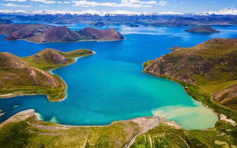
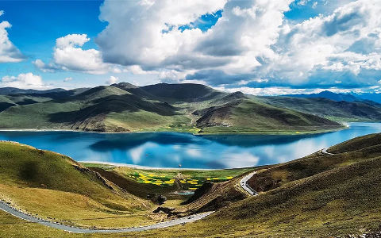
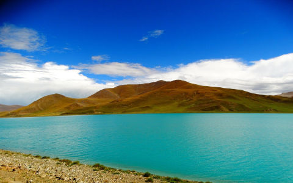
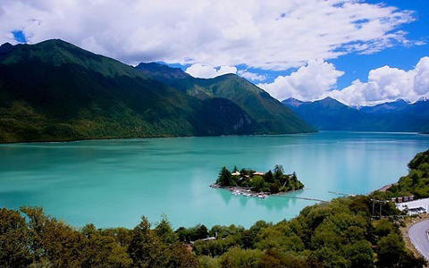
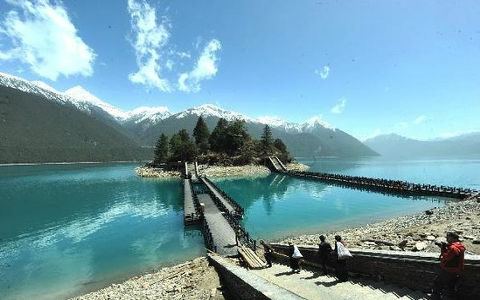
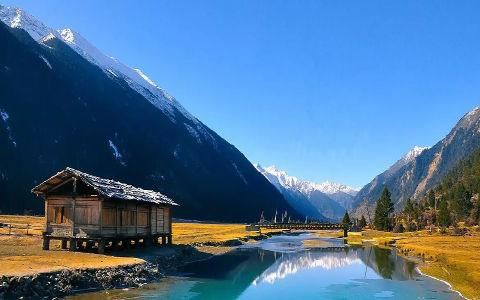
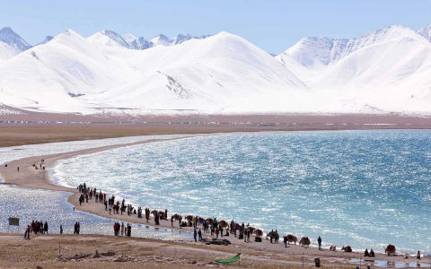
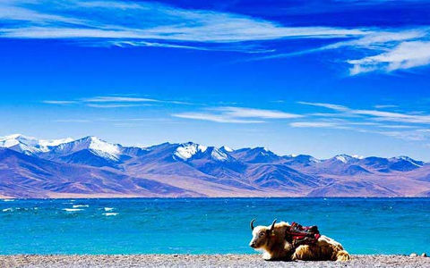
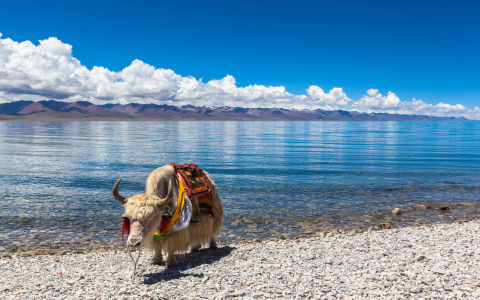

Paysages au Tibet
Découvrez les paysages à couper le souffle du Tibet. Du majestueux mont Everest au serein lac Yamdrok, découvrez la nature à son meilleur.
-
Yamdrok Lake
Le lac Yamdrok est souvent décrit comme un « joyau turquoise » et sa beauté à couper le souffle en a fait l'un des lacs les plus photographiés du Tibet. S'étendant sur 72 kilomètres, le lac est alimenté par l'eau de fonte des glaciers, lui donnant une teinte turquoise brillante qui contraste avec le terrain accidenté qui l'entoure. Le lac est entouré de collines et de sommets enneigés, ce qui en fait une destination parfaite. Les habitants considèrent le lac Yamdrok comme l'un des lacs les plus sacrés du Tibet, considéré comme une source de vie et d'énergie spirituelle. Les visiteurs peuvent profiter d'une vue imprenable depuis le col de Kamba La, où le lac s'étend comme un ruban bleu vif en contrebas. Vous pouvez également explorer les petits villages tibétains autour du lac et découvrir la culture et les traditions de la région. Les ornithologues amateurs seront ravis d'apercevoir les oiseaux migrateurs qui fréquentent les rives du lac à certaines périodes de l'année.
   -
Draksum-tso Lake
Le lac Draksum-tso, également connu sous le nom de Basum-tso, est un lac alpin immaculé situé à l'est du Tibet. Cette magnifique étendue d’eau est entourée de forêts luxuriantes et de montagnes aux sommets enneigés, créant un paysage parfait. Au cœur du lac se trouve l'île Tashi, qui abrite un petit mais ancien temple bouddhiste, qui ajoute une touche spirituelle à la beauté naturelle. Les visiteurs peuvent faire une promenade en bateau pour explorer l'île ou faire une randonnée le long des rives du lac pour profiter d'une vue panoramique sur le paysage environnant. Draksum-tso est également connue pour ses eaux bleues vibrantes qui reflètent le ciel, ce qui en fait une destination préférée des photographes et des amoureux de la nature.
   -
Namtso Lake
Connu sous le nom de « Lac céleste », Namtso est l'un des lacs d'eau salée les plus hauts du monde, situé à plus de 4 700 mètres d'altitude. Ses eaux cristallines reflètent la chaîne de montagnes Nyenchen Tanglha environnante, créant un paysage éthéré et tranquille. Namtso revêt une profonde signification spirituelle pour les bouddhistes tibétains, qui le considèrent comme un site sacré. Les pèlerins effectuent souvent des circumambulations autour du lac, en particulier pendant les périodes propices du calendrier tibétain. Le lac est parsemé de petites îles, qui seraient des lieux de retraite de méditation pour les moines dans les temps anciens. Les visiteurs de Namtso peuvent faire de la randonnée le long de ses rives, se prélasser dans la sérénité et s'émerveiller devant la beauté préservée de la région. À la tombée de la nuit, la région se transforme en un paradis pour les observateurs d'étoiles, avec un ciel cristallin offrant une vue imprenable sur les constellations et la Voie lactée. En hiver, le lac gelé offre une beauté différente, avec sa surface glacée scintillant au soleil.
  